  <ion-header [translucent]="true">
    <ion-toolbar class="top2">
      <ion-grid>
        <ion-row *ngIf="alternar ==true">
          <ion-col size=3>
            <a style="text-decoration: none;" href="/">
              
            </a>
          </ion-col>
          <ion-col size = 9>
          </ion-col>
        </ion-row>
        <ion-row *ngIf="alternar ==false">
          <ion-col routerLink="/" size=3>
            
          </ion-col>
          <ion-col size=9>
          </ion-col>
        </ion-row>
      </ion-grid>
    </ion-toolbar>
  </ion-header>

<ion-content>
  <ion-list-header *ngIf = "ppa.length>0" lines = "none">
    <ion-label color="primary">Lista de votação</ion-label>
  </ion-list-header>
  
  <ion-list *ngFor = "let c of ppa">
    <ion-item (click)="presentModal(c.id, c.nome, c.cpf,c.distrito, c.email, c.lido, c.comentario, c.escolha1, c.escolha2, c.escolha3)" *ngIf = "alternar == true" style ="margin-left: 10%;margin-right: 10%;" lines = "none" button detail >
      <ion-icon *ngIf ="c.lido == 'true' " color = "primary" slot="start" name="chatbox-ellipses-outline"></ion-icon>
      <ion-icon *ngIf ="c.lido == 'false' " color = "dark" slot="start" name="chatbox-ellipses-outline"></ion-icon>
      <ion-label *ngIf ="c.lido == 'true' " color = "primary" >
        {{c.nome}}
      </ion-label>
      <ion-label *ngIf ="c.lido == 'false' " color = "dark">
        {{c.nome}}
      </ion-label>
    </ion-item>

    <ion-item (click)="presentModal(c.id, c.nome, c.cpf,c.distrito, c.email, c.lido, c.comentario, c.escolha1, c.escolha2, c.escolha3)" *ngIf = "alternar ==false" lines = "none" button detail >
      <ion-icon *ngIf ="c.lido == 'true' " color = "primary" slot="start" name="chatbox-ellipses-outline"></ion-icon>
      <ion-icon *ngIf ="c.lido == 'false' " color = "dark" slot="start" name="chatbox-ellipses-outline"></ion-icon>
      <ion-label *ngIf ="c.lido == 'true' " color = "primary" >
        {{c.nome}}
      </ion-label>
      <ion-label *ngIf ="c.lido == 'false' " color = "dark">
        {{c.nome}}
      </ion-label>
    </ion-item>
  </ion-list>
</ion-content>
